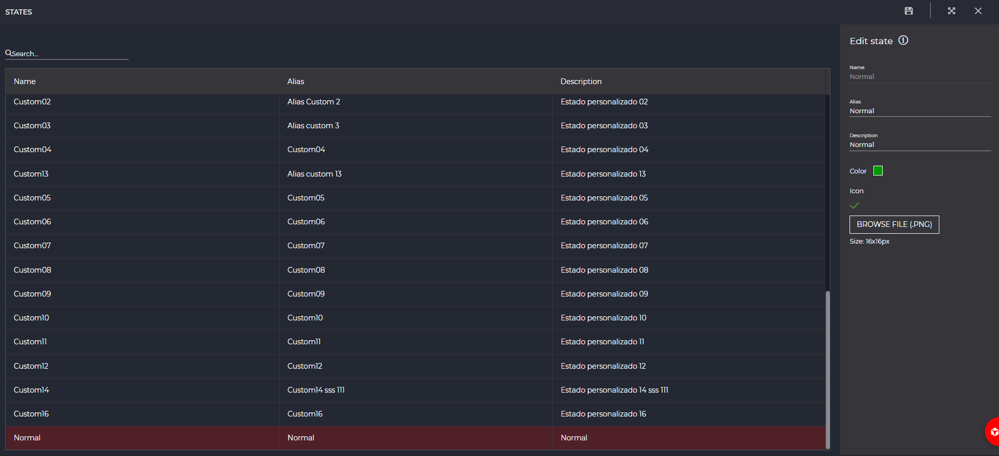

Estados
1. Introducción
A lo largo de las diferentes secciones de IDbox es posible visualizar junto a los datos un estado asociado que, como se visualiza en la siguiente imagen, está formado por un icono y un texto.

De esta manera, es posible configurar e identificar uno o varios escenarios concretos como puede ser INVÁLIDO, NORMAL, ALARMA ALTA, entre otros. A lo largo de esta sección se muestran aspectos relativos a su administración.
2. Administración de estados
Para configurar los estados del sistema es posible acceder a su administración desde la sección habilitada en el panel de control como muesta la siguiente figura.
Una vez dentro, y como se visualiza en la siguiente imagen, se muestran dos apartados formados por la lista de estados a la izquierda y sus propiedades a la derecha. Los cambios realizados pueden ser persistidos mediante el botón de guardado disponible en la barra de herramientas superior.

En las siguientes secciones de la documentación se describe el uso de cada apartado.
2.1 Lista de estados
El panel de la izquierda muestra el listado de los estados registrados en la aplicación, que pueden ser filtrados mediante un término de búsqueda empleando el buscador situado en la parte superior.
Éstos se encuentran ordenados por prioridad ascendente, siendo los primeros menos importantes que los últimos. De esta manera, si un estado está compuesto por varios, el orden se establecerá según este criterio. Para modificar la prioridad es suficiente con hacer clic sobre la fila y arrastrarla a la posición deseada sin soltar la selección.
2.2 Propiedades de estados
Al hacer clic sobre uno de los estados disponibles en el listado, el panel derecho muestra su información detallada así como el aspecto visual en cuanto a su icono y texto. Salvo el nombre, que se trata de un identificador, el resto de aspectos que se enumeran a continuación pueden ser personalizados:
- Alias: permite identificar el estado con un nombre personalizado.
- Descripción: texto personalizado que describe el escenario representado por el estado.
- Color: a través del selector o mediante un código hexadecimal/RGB es posible definir un color representativo del estado.
- Icono: permite adjuntar una imagen de dimensiones 16x16 píxeles y formato PNG que acompañará a la visualización del estado.
Es importante tener en cuenta que algunos estados pueden no ser modificados por el usuario.